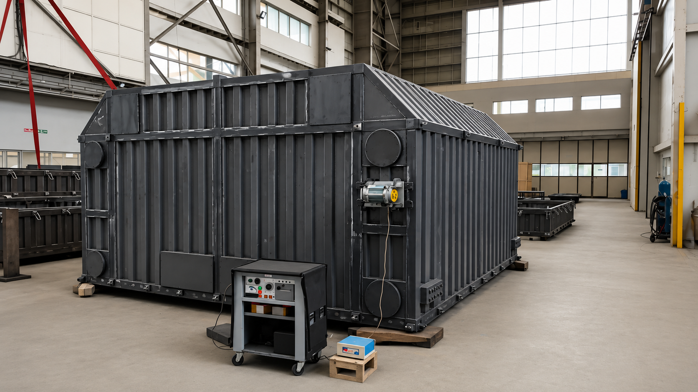

Approximately 30–60 minutes per treatment zone, depending on component and application.
Application assessment and field engineering are supported by Mr. K.M.P.S. Nagpal, B.Tech, IIT Kharagpur, with more than 42 years of industrial manufacturing and VSR experience.


Pan-India mobile service coverage
Components of 150+ metric tonnes, subject to application requirements and equipment configuration
Large and complex geometries
Ferrous and selected non-ferrous materials subject to application assessment
Non-thermal treatment avoids heat-induced oxidation and scaling, helping retain existing surface condition
Typical treatment cycle: approximately 30-60 minutes per treatment zone